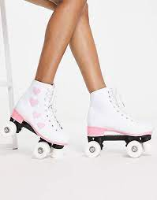
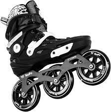
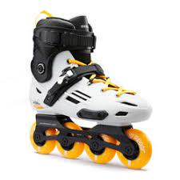
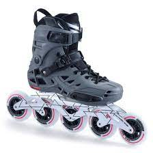
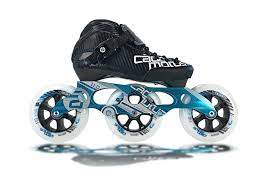
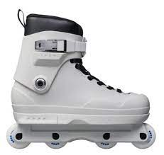

Roller skating is the act of traveling on surfaces with roller skates. It is a recreational activity, a sport, and a form of transportation. Roller rinks and skate parks are built for roller skating, though it also takes place on streets, sidewalks, and bike paths.
There are many types of Roller Skates, with various sub-categories. Depending on what your preference is you can choose from recreational or aggresive. You can go for 3, 4, or even 5 wheels base. There is something for everyone.
 |
Quad-skates. Perfect for beginers. Easier to balance left and right. Harder to balance front to back.Those will not give you much speed, however are perfect for smooth surfaces. Tons of fun! |
 |
Three-wheels base inline skates. Trickier to use as your center of gravity is higher and ground-wheels surfece is much smaller. When mastered, those skates will compensate you with speed and freedom of movement on most surfaces. |
 |
Four-wheels base inline skates. More stable than 3 wheels. You sacrifise speed over control. Most popular, often chosen by newbies. Perfect for city exploring and daily excersizing. |
 |
Five-wheels base inline skates.Even more stability than 4 wheels. Fairly new and less common than other types. Those are 3 and four wheels combined. Less control and turnability for better speed and grip on corners. |
 |
Serious speed. Performace leaning skates. Used to attack long distances. Hardest to use. |
 |
Skate park focsed. Not usable on most surfaces. Flat wheels provide more balance, sacrifising speed. A lot of fun when used on perfectly smooth surfaces. |
Here is a video of a preson using roller skates! It takes a lot of prectice to be able to move like this!